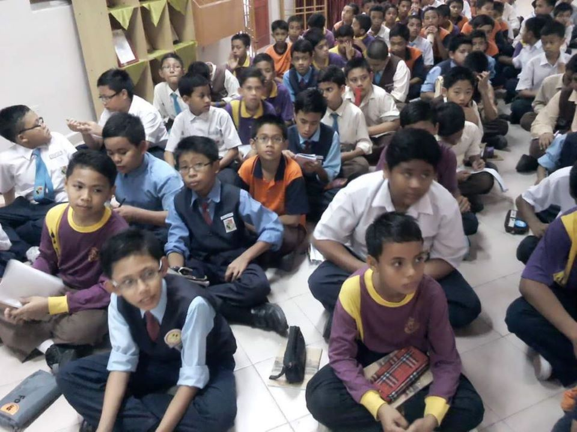
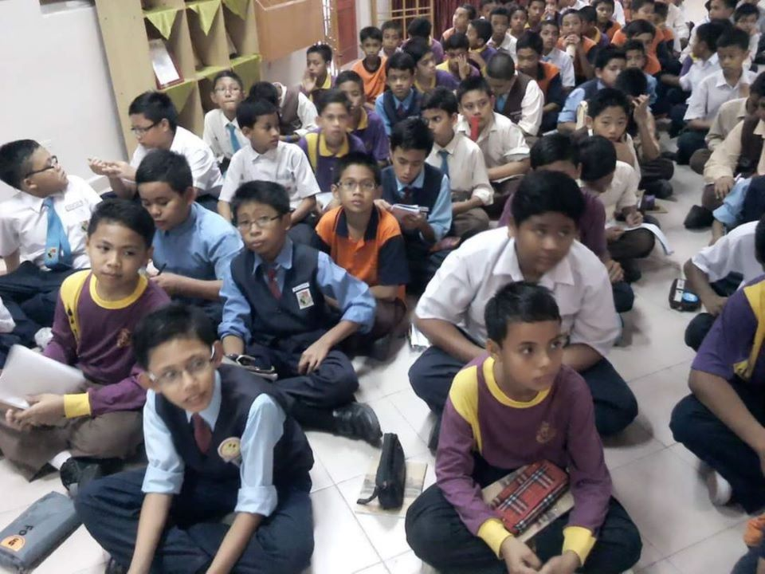

SK SERI BIRAM (PRIMARY SCHOOL)
I spent most of my childhood years at this school,I also sit for UPSR in this school which alhamdulilah i got 5A.Below are my class list during my time here and some of the photos:
- Iman
- Iqra
- Ilmu
- Ilmu
- Ilmu
- Iqra
I spent most of my childhood years at this school,I also sit for UPSR in this school which alhamdulilah i got 5A.Below are my class list during my time here and some of the photos:
 

| PT3 | 7A1B1C1D |
|---|---|
| SPM | 4A4B1C |